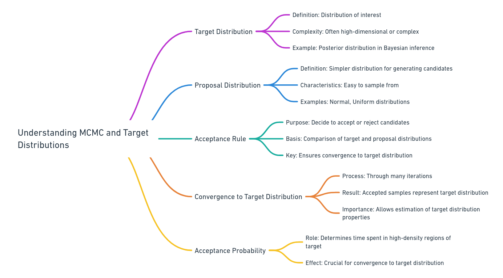
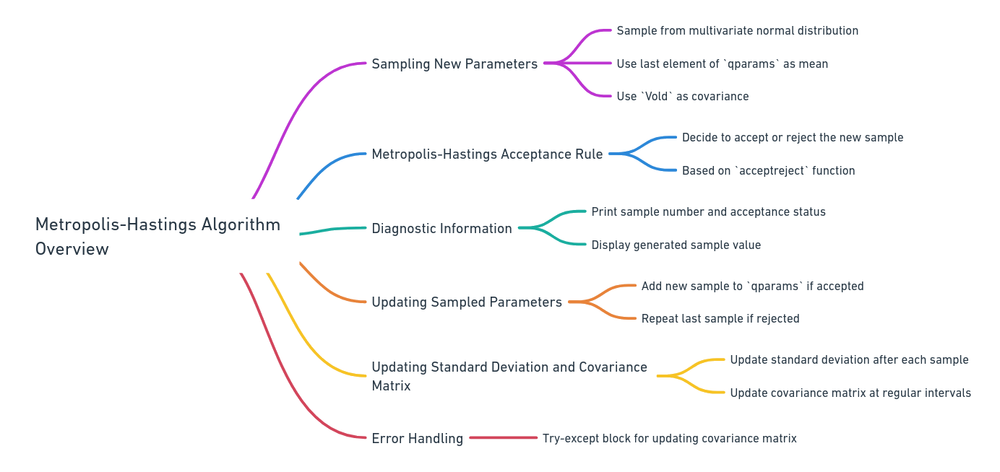

LANL was my first postdoc after finishing graduate school, and USC was my final postdoc
before getting my green card. At USC, I spearheaded a project to develop
a Bayesian inference framework for model parameter estimation from time series data.
The challenge was to create a model that could accurately predict
and analyze complex data patterns. By employing Bayesian methods,
I was able to construct a framework that not only provided precise estimations
but also accounted for uncertainties in the data.
Bayesian Inference in Time Series Analysis
- Concept: Bayesian inference updates the probability of a model parameter's value based on observed time series data.
- Process: It combines prior knowledge about the parameter (prior probability) with the likelihood of observing the data given the parameter values to produce an updated probability (posterior probability).
- Bayes' Theorem: The process is governed by the formula \( P(\text{Parameter}|\text{Time Series}) = \frac{P(\text{Time Series}|\text{Parameter}) \times P(\text{Parameter})}{P(\text{Time Series})} \).
- Application: This approach is particularly valuable in time series analysis for incorporating prior knowledge and handling complex, dynamic data.
Markov Chain Monte Carlo (MCMC) in Bayesian Time Series Analysis

- Purpose: MCMC is used to approximate the posterior distribution of a parameter when it's too complex to calculate directly in the context of time series data.
- Method: It generates a series of samples through a Markov chain process, where the distribution of these samples converges to the posterior distribution of the parameter.
- Algorithms: Includes techniques like Metropolis-Hastings and Gibbs sampling, tailored to explore the parameter space efficiently.
- Utility: The samples from MCMC provide a way to estimate and understand the posterior distribution, allowing for predictions and uncertainty quantification in time series models.
Metropolis-Hastings

MCMC Sampling Evolution History
Posterior distribution
 Burn-in ratio of 1/2
Burn-in ratio of 1/2